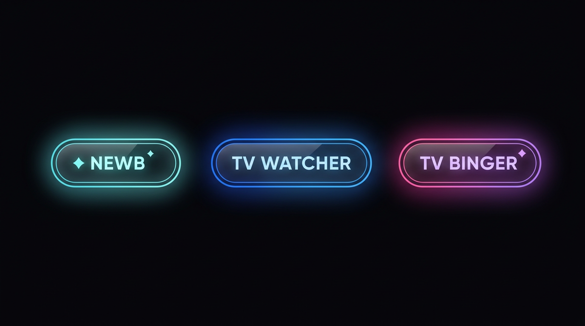
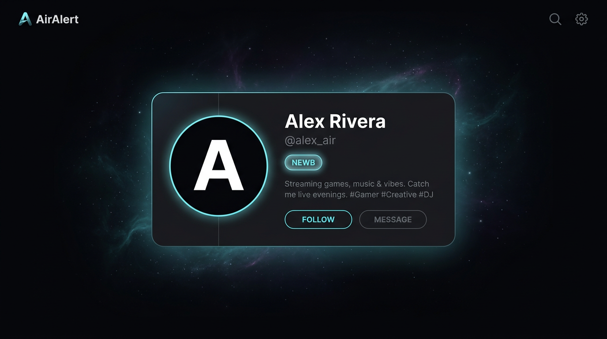

Just landed. Building a watchlist from zero — hit me with recommendations that aren’t the same three shows everyone talks about.
Preview for Newb, TV Watcher, and TV Binger — same neon-glass vibe as AirAlert. Use the classes below on profile headers, community posts, or DM chips when you wire roles to the backend.


Five example profiles (copy/paste personas for fixtures or seed data)
Just landed. Building a watchlist from zero — hit me with recommendations that aren’t the same three shows everyone talks about.
One episode a night, same timezone as the air date. I’m here for the weekly threads and the “did you catch that?” moments.
If the season dropped, I’ve probably finished it by Sunday. Spoiler-aware in Community; chaos in the group chat.
Drama + weird sci-fi. I rate episodes, argue about finales politely, and never skip the cold open.
Tasks list is my villain arc. I clear whole shows between work shifts — notifications on, sleep optional.
Suggested CSS classes for production: role-badge + role-badge--newb |
role-badge--watcher | role-badge--binger. Optional icon is decorative; hide from AT with
aria-hidden="true" and keep the role text in the badge. Raster previews:
role-badges-strip.png, profile-card-example-newb.png. Open
design/profile-role-badge-samples/index.html in a browser (same folder as the PNGs) to see HTML + images together.